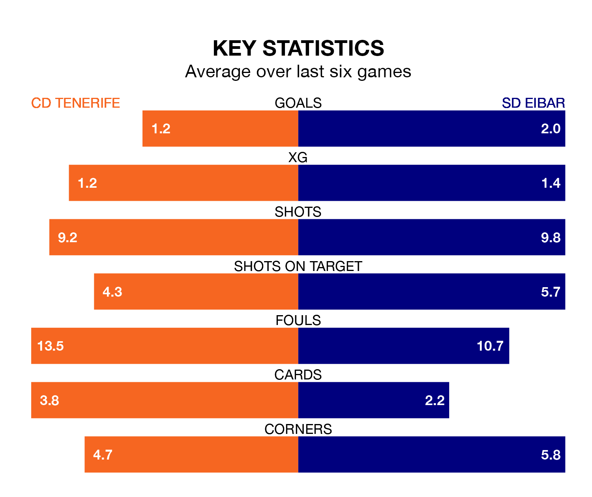

CD Tenerife host SD Eibar on Sunday at the Estadio Heliodoro Rodríguez Lopéz in the Segunda División.
In their last league match, on March 31, Tenerife lost to Real Zaragoza 3-1 away, with their goal scored by Ángel Rodríguez.
Eibar won, 5-1 at home against CD Eldense on March 30, with Konrad De La Fuente (two), Ager Aketxe Barrutia, Matheus Pereira da Silva and Sergio Álvarez Díaz on the scoresheet.
With 54 goals in 33 games so far this season, Eibar are the league's joint-highest scorers with 1.6 goals per game. But they are conceding more than average too, letting in 38 goals at a rate of 1.2 per game.
Tenerife, meanwhile, are below average scorers, with 0.9 goals per game, compared to a league average of 1.1. They have conceded 1.0 goal per game.
The away side are second in the table after 33 games, of which they have won 16 and drawn seven, earning 55 points.
The hosts are 10 places behind Eibar in 12th, with 11 wins and nine draws putting them on 42 points.
In the last 10 years, Tenerife and Eibar have played each other on seven occasions. Tenerife won one of them and Eibar the other.
On average, Tenerife scored 0.6 goals and Eibar 1.7 in those matches.
Their last meeting was on September 30, when Eibar won 3-0 at home.
In Jon Bautista Orgilles, Eibar have one of the league's most on-form strikers so far this season. He has notched 12 goals in 28 appearances, to sit fourth in the scoring charts.
His goal rate of one every 158 minutes is quicker than that of Rodríguez Díaz, Tenerife's top scorer with a goal every 176 minutes, and a total of eight goals in 28 games.
Tenerife are in disappointing form in the Segunda División, with one win and three draws from their last six games.
With three wins and three losses over that period, the visitors' form is better – they have taken nine points from 18, compared to the home team's six.
Updated: 16:41 (UTC), 04/04/24